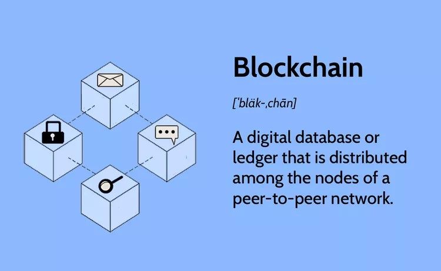

What is Blockchain Technology? How Does Blockchain Work?
Reviewed and fact-checked by Sayantoni Das
Over the past few years, you have consistently heard the term ‘blockchain technology,’ probably regarding cryptocurrencies, like Bitcoin. In fact, you may be asking yourself, “what is blockchain technology?” It seems like blockchain is a platitude but in a hypothetical sense, as there is no real meaning that the layman can understand easily. It is imperative to answer “what is blockchain technology, “including the technology that is used, how it works, and how it’s becoming vital in the digital world.
As blockchain continues to grow and become more user-friendly, the onus is on you to learn this evolving technology to prepare for the future. If you are new to blockchain, then this is the right platform to gain solid foundational knowledge. In this article, you learn how to answer the question, “what is blockchain technology?” You’ll also learn how blockchain works, why it’s important, and how you can use this field to advance your career.
What Is Blockchain Technology?
Blockchain is a method of recording information that makes it impossible or difficult for the system to be changed, hacked, or manipulated. A blockchain is a distributed ledger that duplicates and distributes transactions across the network of computers participating in the blockchain. Blockchain technology is a structure that stores transactional records, also known as the block, of the public in several databases, known as the “chain,” in a network connected through peer-to-peer nodes. Typically, this storage is referred to as a ‘digital ledger.’ Every transaction in this ledger is authorized by the digital signature of the owner, which authenticates the transaction and safeguards it from tampering. Hence, the information the digital ledger contains is highly secure. In simpler words, the digital ledger is like a Google spreadsheet shared among numerous computers in a network, in which, the transactional records are stored based on actual purchases. The fascinating angle is that anybody can see the data, but they can’t corrupt it.
Why is Blockchain Popular?
Suppose you are transferring money to your family or friends from your bank account. You would log in to online banking and transfer the amount to the other person using their account number. When the transaction is done, your bank updates the transaction records. It seems simple enough, right? There is a potential issue which most of us neglect.
These types of transactions can be tampered with very quickly. People who are familiar with this truth are often wary of using these types of transactions, hence the evolution of third-party payment applications in recent years. But this vulnerability is essentially why Blockchain technology was created.
Technologically, Blockchain is a digital ledger that is gaining a lot of attention and traction recently. But why has it become so popular? Well, let’s dig into it to fathom the whole concept.
Record keeping of data and transactions are a crucial part of the business. Often, this information is handled in house or passed through a third party like brokers, bankers, or lawyers increasing time, cost, or both on the business. Fortunately, Blockchain avoids this long process and facilitates the faster movement of the transaction, thereby saving both time and money.
Most people assume Blockchain and Bitcoin can be used interchangeably, but in reality, that’s not the case. Blockchain is the technology capable of supporting various applications related to multiple industries like finance, supply chain, manufacturing, etc., but Bitcoin is a currency that relies on Blockchain technology to be secure.
Blockchain is an emerging technology with many advantages in an increasingly digital world:
- Highly Secure
It uses a digital signature feature to conduct fraud-free transactions making it impossible to corrupt or change the data of an individual by the other users without a specific digital signature.
- Decentralized System
Conventionally, you need the approval of regulatory authorities like a government or bank for transactions; however, with Blockchain, transactions are done with the mutual consensus of users resulting in smoother, safer, and faster transactions.
- Automation Capability
It is programmable and can generate systematic actions, events, and payments automatically when the criteria of the trigger are met.
Structure and Design of Blockchain
A blockchain is a distributed, immutable, and decentralized ledger at its core that consists of a chain of blocks and each block contains a set of data. The blocks are linked together using cryptographic techniques and form a chronological chain of information. The structure of a blockchain is designed to ensure the security of data through its consensus mechanism which has a network of nodes that agree on the validity of transactions before adding them to the blockchain.
- Blocks:
A block in a blockchain is a combination of three main components:
1. The header contains metadata such as a timestamp which has a random number used in the mining process and the previous block's hash.
2. The data section contains the main and actual information like transactions and smart contracts which are stored in the block.
3. Lastly, the hash is a unique cryptographic value that works as a representative of the entire block which is used for verification purposes.
- Block Time:
Block time refers to the time taken to generate a new block in a blockchain. Different blockchains have different block times, which can vary from a few seconds to minutes or may be in hours too. Shorter block times can give faster transaction confirmations but the result has higher chances of conflicts but the longer block times may increase the timing for transaction confirmations but reduce the chances of conflicts.
- Hard Forks:
A hard fork in a blockchain refers to a permanent divergence in the blockchain's history that results in two separate chains. It can happen due to a fundamental change in the protocol of a blockchain and all nodes do not agree on the update. Hard forks can create new cryptocurrencies or the splitting of existing ones and It requires consensus among the network participants to resolve.
- Decentralization:
Decentralization is the key feature of blockchain technology. In a decentralized blockchain, there is no single central authority that can control the network. In decentralization,the decision-making power is distributed among a network of nodes that collectively validate and agree on the transactions to be added to the blockchain. This decentralized nature of blockchain technology helps to promote transparency, trust, and security. It also reduces the risk to rely on a single point of failure and minimizes the risks of data manipulation.
- Finality:
Finality refers to the irreversible confirmation of transactions in a blockchain. If and when a transaction is added to a block and the block is confirmed by the network, it becomes immutable and cannot be reversed. This feature ensures the integrity of the data and prevents double spending, providing a high level of security and trust in Blockchain Types & Sustainability
- Openness:
Openness in blockchain technology makes the blockchain accessible to anyone who intends to participate in the network. This implies that it is open for all and anyone can join the network, validate transactions, and can add new blocks to the blockchain, so long as they know the consensus rules. Openness promotes inclusivity, transparency, and innovation, as it allows for participation from various stakeholders.
- Public Blockchain:
It is a kind of blockchain which is open for the public and allows everyone to join the network to perform transactions and to participate in the consensus process. Public blockchains are transparent, because all transactions are publicly recorded.
How Does Blockchain Technology Work?
In recent years, you may have noticed many businesses around the world integrating Blockchain technology. But how exactly does Blockchain technology work? Is this a significant change or a simple addition? The advancements of Blockchain are still young and have the potential to be revolutionary in the future; so, let’s begin demystifying this technology.
Blockchain is a combination of three leading technologies:
1. Cryptographic keys
2. A peer-to-peer network containing a shared ledger
3. A means of computing, to store the transactions and records of the network
Cryptography keys consist of two keys – Private key and Public key. These keys help in performing successful transactions between two parties. Each individual has these two keys, which they use to produce a secure digital identity reference. This secured identity is the most important aspect of Blockchain technology. In the world of cryptocurrency, this identity is referred to as ‘digital signature’ and is used for authorizing and controlling transactions
The digital signature is merged with the peer-to-peer network; a large number of individuals who act as authorities use the digital signature in order to reach a consensus on transactions, among other issues. When they authorize a deal, it is certified by a mathematical verification, which results in a successful secured transaction between the two network-connected parties. So to sum it up, Blockchain users employ cryptography keys to perform different types of digital interactions over the peer-to-peer network.
Types of Blockchain
There are different types of blockchains. They are as follows:
Private Blockchain Networks
Private blockchains operate on closed networks, and tend to work well for private businesses and organizations. Companies can use private blockchains to customize their accessibility and authorization preferences, parameters to the network, and other important security options. Only one authority manages a private blockchain network.
Public Blockchain Networks
Bitcoin and other cryptocurrencies originated from public blockchains, which also played a role in popularizing distributed ledger technology (DLT). Public blockchains also help to eliminate certain challenges and issues, such as security flaws and centralization. With DLT, data is distributed across a peer-to-peer network, rather than being stored in a single location. A consensus algorithm is used for verifying information authenticity; proof of stake (PoS) and proof of work (PoW) are two frequently used consensus methods.
Permissioned Blockchain Networks
Also sometimes known as hybrid blockchains, permissioned blockchain networks are private blockchains that allow special access for authorized individuals. Organizations typically set up these types of blockchains to get the best of both worlds, and it enables better structure when assigning who can participate in the network and in what transactions.
Consortium Blockchains
Similar to permissioned blockchains, consortium blockchains have both public and private components, except multiple organizations will manage a single consortium blockchain network. Although these types of blockchains can initially be more complex to set up, once they are running, they can offer better security. Additionally, consortium blockchains are optimal for collaboration with multiple organizations.
Hybrid Blockchains
Hybrid blockchains are the combination of both public and private blockchains. In a hybrid blockchain, some parts of the blockchain are public and transparent, while others are private and accessible only to authorized and specific participants. This makes hybrid blockchains ideal for use in those cases where a balance is required between transparency and privacy. For example, in supply chain management multiple parties can access certain information, but sensitive data can be kept private.
Sidechains
Sidechains are different blockchains that run parallel to the main blockchain, allowing for additional functionality and scalability. Sidechains enable developers to experiment with new features and applications without affecting the main blockchain's integrity. For example, sidechains can be used for creating decentralized applications and to implement specific consensus mechanisms. Sidechains can also be used to handle transactions of the main blockchain to reduce congestion and increase scalability.
Blockchain Layers
Blockchain layers refer to the concept of building multiple layers of blockchains on top of each other. Each layer can have its own consensus mechanism, rules, and functionality which can interact with other layers. This ensures greater scalability, as transactions can be processed in parallel across different layers. For example, the Lightning Network, built on top of the Bitcoin blockchain, is a second layer solution that enables faster and cheaper transactions by creating payment channels between users.
The Process of Transaction
One of Blockchain technology’s cardinal features is the way it confirms and authorizes transactions. For example, if two individuals wish to perform a transaction with a private and public key, respectively, the first person party would attach the transaction information to the public key of the second party. This total information is gathered together into a block.
The block contains a digital signature, a timestamp, and other important, relevant information. It should be noted that the block doesn’t include the identities of the individuals involved in the transaction. This block is then transmitted across all of the network's nodes, and when the right individual uses his private key and matches it with the block, the transaction gets completed successfully.
In addition to conducting financial transactions, the Blockchain can also hold transactional details of properties, vehicles, etc.
Here’s a use case that illustrates how Blockchain works:
- Hash Encryptions
blockchain technology uses hashing and encryption to secure the data, relying mainly on the SHA256 algorithm to secure the information. The address of the sender (public key), the receiver’s address, the transaction, and his/her private key details are transmitted via the SHA256 algorithm. The encrypted information, called hash encryption, is transmitted across the world and added to the blockchain after verification. The SHA256 algorithm makes it almost impossible to hack the hash encryption, which in turn simplifies the sender and receiver’s authentication.
- Proof of Work
In a Blockchain, each block consists of 4 main headers.
- Previous Hash: This hash address locates the previous block.
- Transaction Details: Details of all the transactions that need to occur.
- Nonce: An arbitrary number given in cryptography to differentiate the block’s hash address.
- Hash Address of the Block: All of the above (i.e., preceding hash, transaction details, and nonce) are transmitted through a hashing algorithm. This gives an output containing a 256-bit, 64 character length value, which is called the unique ‘hash address.’ Consequently, it is referred to as the hash of the block.
- Numerous people around the world try to figure out the right hash value to meet a pre-determined condition using computational algorithms. The transaction completes when the predetermined condition is met. To put it more plainly, Blockchain miners attempt to solve a mathematical puzzle, which is referred to as a proof of work problem. Whoever solves it first gets a reward.

- Mining
In Blockchain technology, the process of adding transactional details to the present digital/public ledger is called ‘mining.’ Though the term is associated with Bitcoin, it is used to refer to other Blockchain technologies as well. Mining involves generating the hash of a block transaction, which is tough to forge, thereby ensuring the safety of the entire Blockchain without needing a central system.
History of Blockchain
Satoshi Nakamoto, whose real identity still remains unknown to date, first introduced the concept of blockchains in 2008. The design continued to improve and evolve, with Nakamoto using a Hashcash-like method. It eventually became a primary component of bitcoin, a popular form of cryptocurrency, where it serves as a public ledger for all network transactions. Bitcoin blockchain file sizes, which contained all transactions and records on the network, continued to grow substantially. By August 2014, it had reached 20 gigabytes, and eventually exceeded 200 gigabytes by early 2020.
Advantages and Disadvantages of Blockchain
Like all forms of technology, blockchain has several advantages and disadvantages to consider.
Advantages
One major advantage of blockchains is the level of security it can provide, and this also means that blockchains can protect and secure sensitive data from online transactions. For anyone looking for speedy and convenient transactions, blockchain technology offers this as well. In fact, it only takes a few minutes, whereas other transaction methods can take several days to complete. There is also no third-party interference from financial institutions or government organizations, which many users look at as an advantage.
Disadvantages
Blockchain and cryptography involves the use of public and private keys, and reportedly, there have been problems with private keys. If a user loses their private key, they face numerous challenges, making this one disadvantage of blockchains. Another disadvantage is the scalability restrictions, as the number of transactions per node is limited. Because of this, it can take several hours to finish multiple transactions and other tasks. It can also be difficult to change or add information after it is recorded, which is another significant disadvantage of blockchain.
How is Blockchain Used?
Blockchains store information on monetary transactions using cryptocurrencies, but they also store other types of information, such as product tracking and other data. For example, food products can be tracked from the moment they are shipped out, all throughout their journey, and up until final delivery. This information can be helpful because if there is a contamination outbreak, the source of the outbreak can be easily traced. This is just one of the many ways that blockchains can store important data for organizations.
Hyperledger, Hosted by the Linux Foundation
Hyperledger is a global collaboration hosted by The Linux Foundation, including finance, banking, IoT, supply chain, manufacturing, and technology leaders. By creating a cross-industry open standard for distributed ledgers, Hyperledger Fabric allows developers to develop blockchain applications to meet specific needs.
Ten Steps to Your First Blockchain Application
- Understand what Blockchain is and its key components.
- Understand the purpose of your application.
- Create a use case for your application.
- Find out if there's already an existing blockchain for your purpose.
- Explore the different types of Blockchain platforms available for your application. There are many types of Blockchain, each with its strengths and weaknesses.
- Choose the right platform for developing your app.
- Select the consensus algorithm you will use.
- Learn Solidity - Ethereum's programming language for smart contracts and DApps (decentralized applications).
- Learn how to use Truffle or Remix - development tools for Ethereum DApps and smart contracts.
- Get an Ethereum account or wallet and buy some Ether (ETH), the currency of the Ethereum network.
Decentralization
Decentralization is difficult to Understand, but it is vital in the world today; decentralization is distributing or dispersing functions, powers, people, or things away from a central location or authority. Within the business world, decentralization typically refers to delegating authority from senior executives to middle managers and other employees further down the organizational hierarchy. The benefits of devolution are many and varied, but the most commonly cited advantages include improved communication, greater employee empowerment, and increased flexibility and responsiveness.
Transparency
One of the most critical aspects of decentralization is transparency. All employees have access to information and decision-making processes in a decentralized organization. This transparency fosters a greater sense of trust and cooperation among employees. Furthermore, it allows employees to hold managers accountable for their decisions.
Bitcoin vs. Blockchain
Bitcoin is a digital currency that was first introduced in 2009 and has been the most popular and successful cryptocurrency to date. Bitcoin's popularity is attributed to its decentralized nature, which means it doesn't have a central authority or bank controlling its supply. This also means that transactions are anonymous, and no transaction fees are involved when using bitcoin.
Blockchain is a database of transactions that have taken place between two parties, with blocks of data containing information about each transaction being added in chronological order to the chain as it happens. The Blockchain is constantly growing as new blocks are added to it, with records becoming more difficult to change over time due to the number of blocks created after them.

Blockchain vs. Banks
Blockchain has the potential to revolutionize the banking industry. Banks need to be faster to adapt to the changing needs of the digital age, and Blockchain provides a way for them to catch up. By using Blockchain, banks can offer their customers a more secure and efficient way to conduct transactions. In addition, Blockchain can help banks to streamline their operations and reduce costs.
What are the Key Components of Blockchain Technology?
There are three key components to blockchain technology:
- The distributed ledger, the consensus mechanism, and the smart contracts.
- The distributed ledger is a database that is spread across a network of computers. The consensus mechanism is what allows the network of computers to agree on the state of the ledger.
- The smart contracts are what allows the blockchain to be used for more than just a database.
What are Blockchain Protocols?
The three most common protocols Bitcoin was the first blockchain protocol and is still the most widely used is:
- Bitcoin- Bitcoin is a decentralized digital currency, often referred to as a cryptocurrency. It exists on a decentralized network of computers, often called a blockchain, that keeps track of all transactions made using the currency. Bitcoin uses a proof-of-work algorithm to validate transactions and add them to the blockchain. Bitcoin was the first cryptocurrency to be created and is the most well-known.
- Ripple- Ripple is a cryptocurrency that is similar to Bitcoin. Ripple uses a decentralized network of computers to keep track of all transactions made using the currency. Ripple uses a proof-of-work algorithm to validate transactions and add them to the blockchain. Ripple was created in 2012 and is the second largest cryptocurrency by market capitalization.
- Ethereum- The Ethereum blockchain was initially described in a white paper by Vitalik Buterin in 2013. Buterin, a programmer who was born in Russia and raised in Canada, had been involved with bitcoin from its early days. He was excited by the technology, but he thought that bitcoin needed a scripting language for application development. He decided to create a new platform that would be more general than bitcoin.
What is the Difference Between a Database and a Blockchain?
So what is the difference between a database and a blockchain? A database is centralized, meaning that a single entity controls it. This entity can be a company, government, or individual. On the other hand, a blockchain is decentralized, meaning that any entity does not control it.
How is Blockchain Different From the Cloud?
Blockchain is a new technology that is different from the cloud in several ways:
- Blockchain is decentralized, while the cloud is centralized. This means that Blockchain is distributed across a network of computers, while the cloud is stored on a central server.
- Blockchain is decentralized, while the cloud is centralized. This means that Blockchain is distributed across a network of computers, while the cloud is stored on a central server.